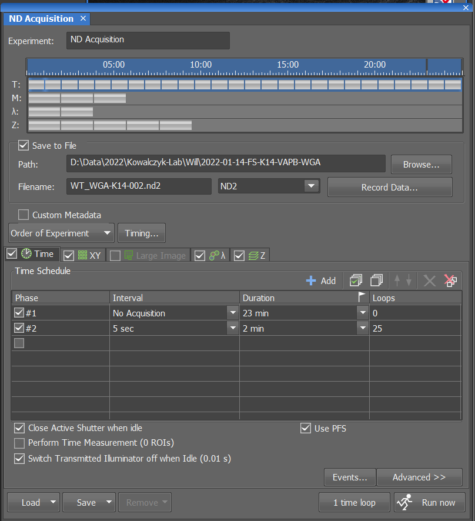
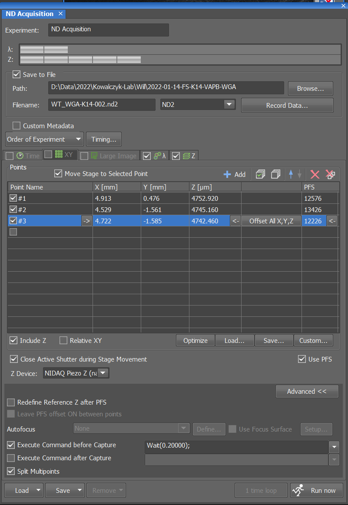
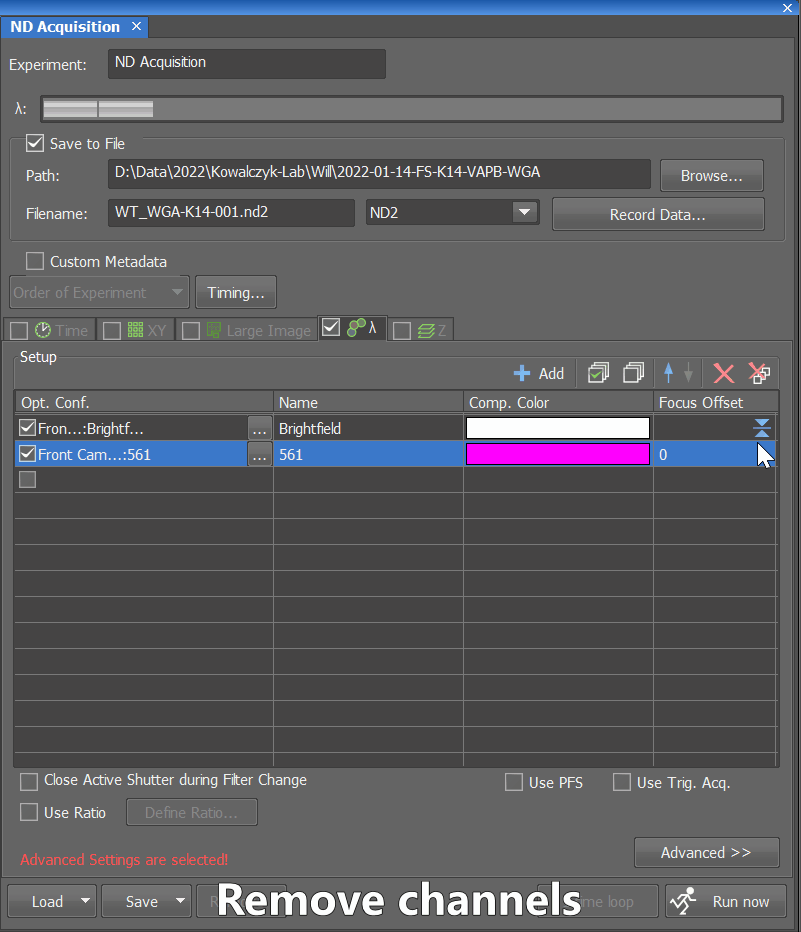
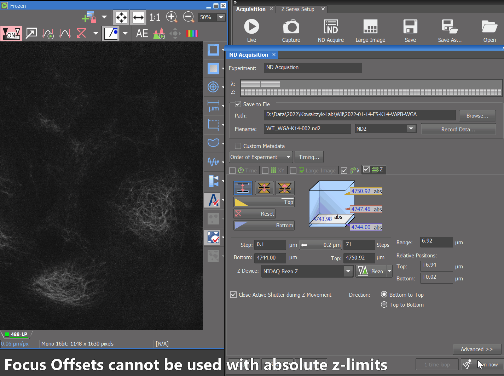
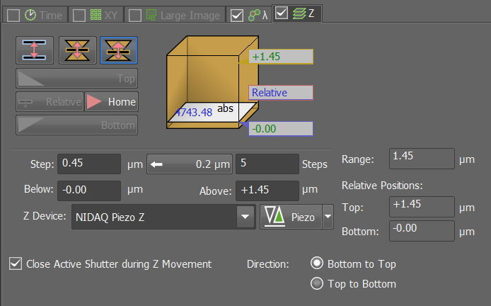

ND Acquisition#
The ND Acquisition window within NIS-Elements allows users to configure N-Dimensional imaging.
There are five tabs: Time, XY (Multipoint), Large Image (for tiling/stitching), \(\lambda\) (for multiple channels/OCs), and Z.
Time#
The Time tab allows for (complex) timelapse imaging.
Tip
Close Active Shutter when idleandSwitch Transmitted Illuminator off when Idle (0.01 s)should nearly always be enabled.- The
1 time loopbutton is very handy for checking multipoints.
In the figure below, note the two phases: the first is an intentional delay, and the second leads to acquisitions every five seconds for two minutes (25 timepoints/"loops" total).

XY (Multipoint)#
The XY tab allows for the sequential imaging of multiple points. This can be a great way to increase throughput during timelapse acquisitions. Each location can have its own Z and PFS values.
Warning
Tip
- If dealing with an uneven stage (as evidenced by multiple points having PFS values off by 1000s), enabling
Include Zshould help. - Nikon also recommended giving PFS additional time for each point via
Wait(0.200000); - NIS-Elements can
Optimizethe order of the points for you to reduce the amount of stage travel Split Multipointsis highly recommended to avoid dealing with one very large .nd2 file.

Large Image (tiling/stitching)#
The Large Image tab allows for tiling/stitching when what you want to capture requires a larger FOV. Note: there are (better) alternatives that allow for more interactive and flexible ROIs.
Channels#
The \(\lambda\) or Channels tab allows for multiple OCs to be used in an experiment. An example of a four-color experiment would include imaging DAPI, AF488, AF555, and AF647. Regular brightfield and DIC are also options.
Note
- Some objectives have a focus (axial) offset between colors. NIS-Elements allows you to correct for this by setting a Focus Offset within the \(\lambda\) tab.

Z#
The Z tab allows for 3-D acquisition/"z-stacks".
Tip
- The speed of a z-piezo is much greater than the microscope body's focus drive.
- This scope is equipped with a z-piezo with a travel range of 450 \(\mu\)m
Using absolute limits#

Using symmetric mode#
You may be forced away from using absolute limits because you're using focus offsets or PFS.

Using asymmetric mode#
Asymmetric mode can be helpful if you know you want a set thickness and can set a limit easily. For example, you only want the first X\(\mu\)m from the coverslip or the thickness of tissue sections are known.

Z device#
- I do not recommend using the
Focus Driveas the Z Device because it will be much slower than using the piezo. NIDAQ Piezo Zshould be slightly more accurate thanTriggered NIDAQ Piezo Zat the slight expense of speed.